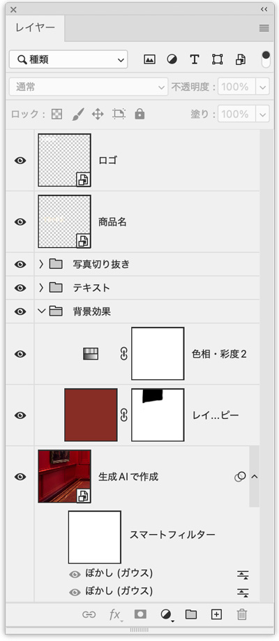
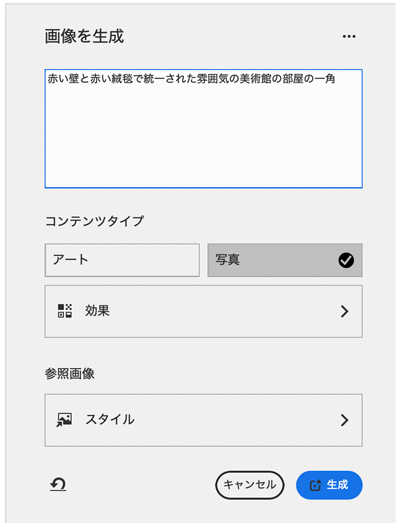
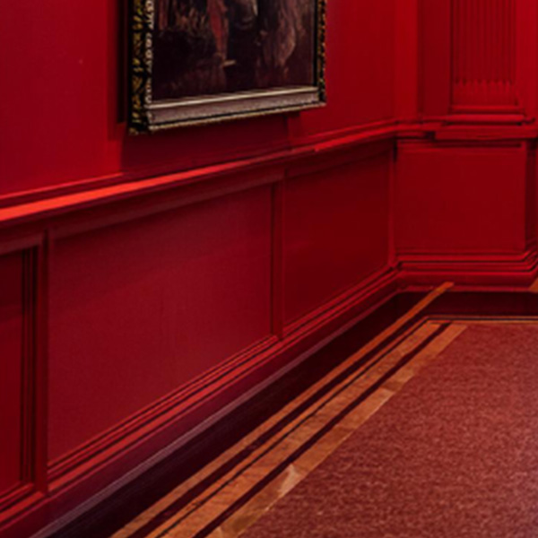
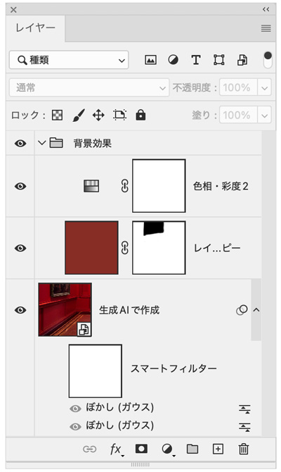
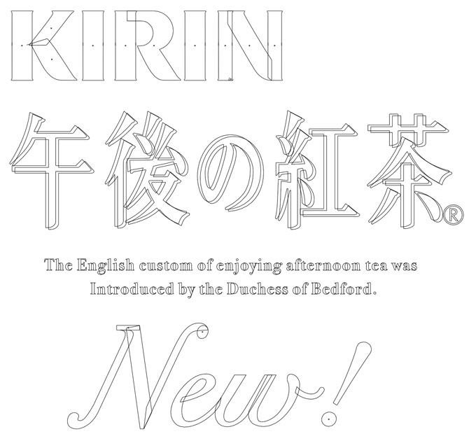

午後の紅茶
design-library.jp
完成例
レイヤー構造

画像を生成
- 「編集」メニュー →「画像を生成」
- プロンプト「赤い壁と赤い絨毯で統一された雰囲気の美術館の部屋の一角に絵が一枚飾ってある」（思い通りのイメージになるまで何度も繰り返します）
- 作成されたイメージを、リサイズ・色調補正をして自分のイメージ通りに修正します


補正

切り抜き写真
Illustatorでロゴなどを作成
